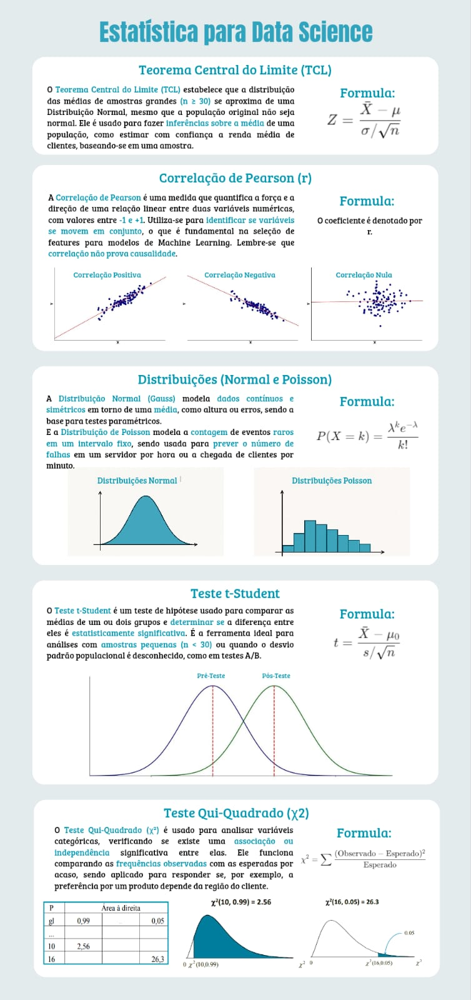

Preço histórico
Série mensal nacional em reais e dólar.
Data Science Dashboard
Interface estática alimentada por JSON gerado no back-end Python. Pronta para GitHub Pages, com indicadores, séries históricas, ranking por UF, regressões e previsão mensal.
Visão geral
Valores nacionais calculados com registros de nível BR para evitar dupla contagem entre regiões e UFs.
| Base | Registros | Localidades | Média arábica | Média canephora | Preço médio R$ | Completude |
|---|
Série mensal nacional em reais e dólar.
Média anual de área plantada e colhida no Brasil.
Indicador percentual nacional calculado por ano.
Top UFs por área total de café no último mês disponível.
Modelagem
Método: carregando...
Percentual de preenchimento por coluna após limpeza e padronização.
Correlação entre variáveis numéricas disponíveis.
Infográfico
